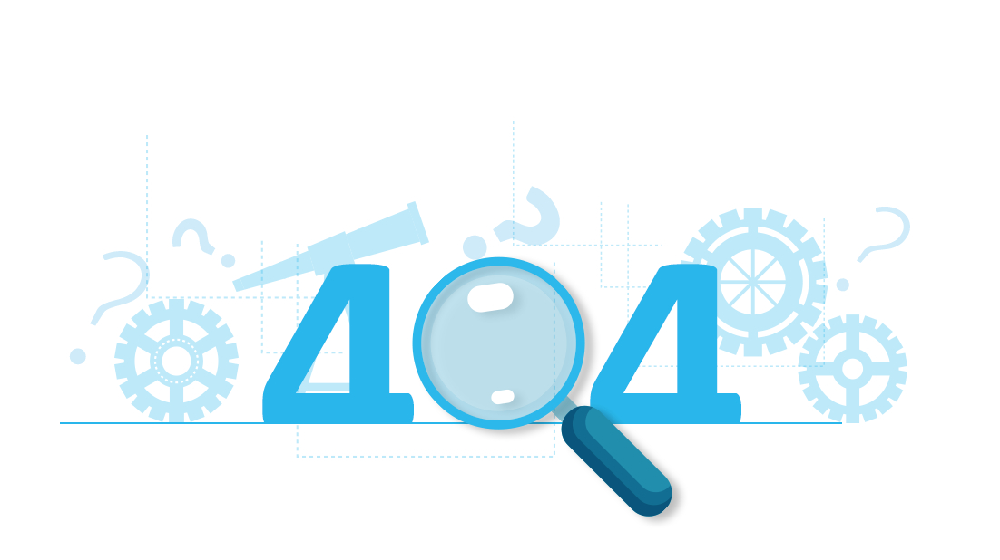

<div>
    <nav class="navbar navbar-expand-lg navbar-light">
        <a class="nav-link" [routerLink]="['/']" routerLinkActive="router-link-active" >
          
        </a>
        <button class="navbar-toggler" type="button" data-toggle="collapse" data-target="#navbarNav"
          aria-controls="navbarNav" aria-expanded="false" aria-label="Toggle navigation">
          <span class="navbar-toggler-icon"></span>
        </button>
        <div class="collapse navbar-collapse" id="navbarNav">
          <ul class="navbar-nav">
            <li class="nav-item active">
              <a class="nav-link" [routerLink]="['/']" routerLinkActive="router-link-active" >
                Pocetna
              </a>
            </li>
            <li class="nav-item">
              <a class="nav-link" [routerLink]="['/key']" routerLinkActive="router-link-active" >Key</a>
            </li>
            <li class="nav-item">
              <a class="nav-link" [routerLink]="['/portfolio']" routerLinkActive="router-link-active" >Portfolio</a>
            </li>
          </ul>
        </div>
      </nav>
      <div class="col text-center">
          <h1>OOoops...</h1>
          <h5>Ova stanica ne postoji u okviru našeg sajta</h5>
          <div class="text-center">
            <button mat-raised-button color="primary" style="font-size: 20px;margin-top: 1em;" [routerLink]="['/']" routerLinkActive="router-link-active" >Vrati se na početnu </button>
          </div>
          
      </div>
</div>